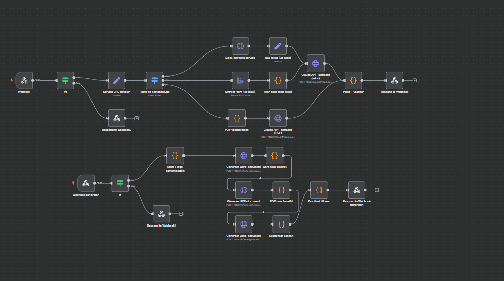

Voorheen ging het uitwerken van een offerte grotendeels met de hand: gegevens overtypen, prijzen narekenen, opmaak herhalen. Een productie-pipeline die prijsopgaves van leveranciers automatisch verwerkt tot professionele offertes, orderbevestigingen en facturen, gebouwd voor ReFurnity, een B2B circulair interieurmanagementbedrijf.

N8N-workflow diagram
Dashboard-walkthrough
Data stroomt door drie systemen die onafhankelijk zijn ontwikkeld (Lovable, N8N en de
Python-service), en die moeten het exact eens zijn over veldnamen. Vrijwel iedere bug
tijdens de bouw kwam hieruit voort. Het herhaalbare fix-patroon: eerst de exacte JSON
bekijken in N8N's Input tab, dan pas verder debuggen.
Regelitems, korting/toeslag verwerkt in eindtotaal, ReFurnity-branding, export naar Word/PDF/Excel.
Zelfde datamodel, ander document: genereert direct vanuit een geaccepteerde offerte.
Sluit de flow af, met dezelfde velden en validatie als de eerdere twee documenten.